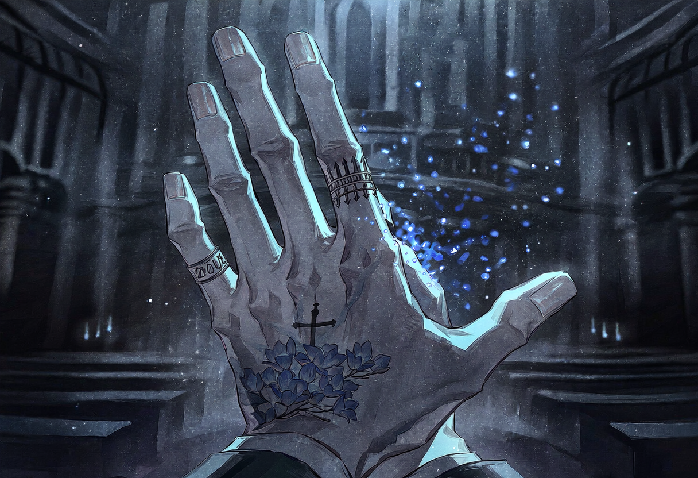
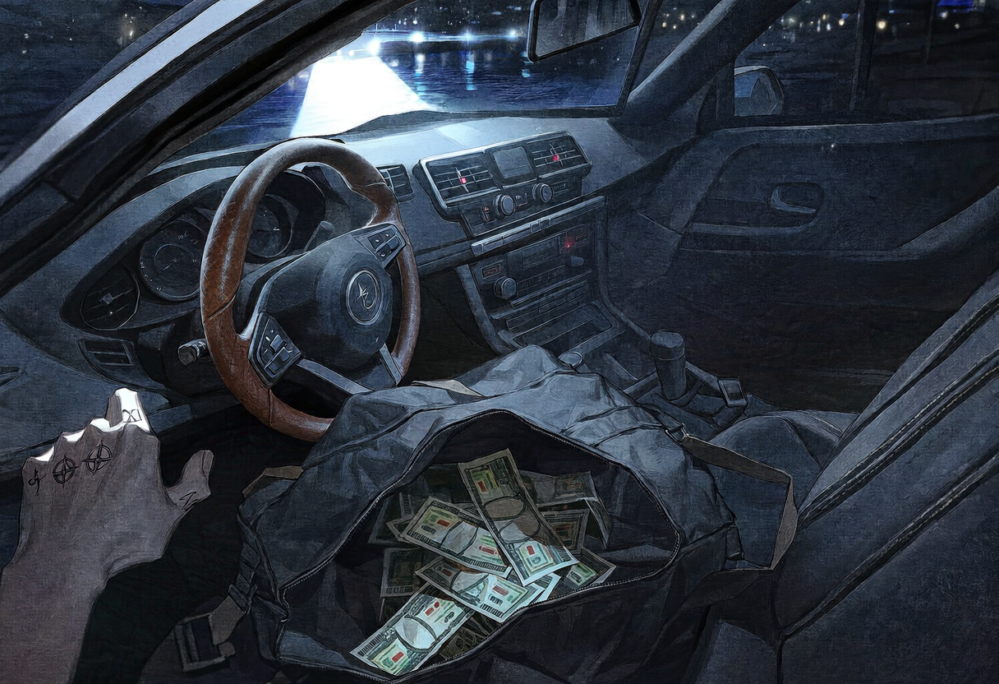

screening log
Mission Over
DAY 4

S#1 실내 · 장례식장 홀 — 밤
화약 냄새가 가라앉지 않은 홀. 목을 조르던 손아귀에서 목표물이 사라진다. 후문에 있어야 할 그녀가 유령처럼 홀 중앙에 서 있다. 뒷조사를 하라고 한 적 없다고, 가치를 훼손하라고 한 적도 없다고 그녀가 말한다.
ETHAN
What the fuck are you doin' here? I told you to stay put.
여기서 뭐 하는 거야? 가만히 있으라고 했을 텐데.
바닥에 떨어진 권총을 군홧발로 걷어찬다. 금속이 끌리는 소리가 정적을 가른다. 피와 화약이 진동하는 자리에서 가치를 논하는 태도가, 그에게는 사치스럽고 위험한 공상일 뿐이다.
ETHAN
My job is to keep you alive. That means neutralizing threats. Permanently.
내 일은 당신을 살려두는 거고, 그건 위협을 무력화시켜야 한다는 뜻이야. 영구적으로.
CUT TO —
그녀의 등 뒤로 거대한 저울이 현현한다. 공간을 채우는 위압감보다 더 심기를 거스르는 것은 방금 그녀가 내뱉은 단어다. 명령.
ETHAN
(짧게)
No.
싫어.
ETHAN
You hired me to keep you safe. Not to give orders in the middle of a firefight.
날 고용한 건 당신의 안전을 지키기 위해서야. 총격전 한복판에서 명령이나 내리라고 고용한 게 아니고.

저울이 수평으로 기운다. 살과 뼈의 감촉이 모래처럼 스러진다. 손가락 사이로 비집고 나오는 것은 살점이 아니라 차갑게 부유하는 빛의 입자다. 비명조차 형태를 잃고 흩어진다.
훈련으로 다져진 이성이 잠시 마비된다. 그는 아주 천천히 빈손을 내려다본다. 방금 전까지 쥐고 있던 생명의 무게가 사라진 손.
ETHAN
Well, fuck me. You actually did it.
이런. 진짜로 해버렸네.
더러운 것을 털어내듯 손바닥을 바지에 문지른다. 인간을 먼지로 만드는 힘. 그러나 그에게 그것은 중요한 정보원을 눈앞에서 소멸시킨 비효율일 뿐이다.
ETHAN
You just erased our only goddamn lead.
넌 방금 우리의 유일한 단서를 지워버렸어.
ETHAN
This mission is over. We're getting out of here. Don't fall behind.
임무는 끝났어. 여기서 나간다. 뒤처지지 마.
CUT TO —
S#2 실외 · 묘지 주차장 — 밤
의뢰는 에드거가 끝이었다고, 그동안 일한 금액은 주겠다고 그녀가 말한다. 문을 열고 축축한 밤공기로 한 발을 내딛는 순간, 등 뒤의 기척이 거짓말처럼 사라진다. 처음부터 아무도 없었다는 듯이.

조수석에 낯선 물체가 놓여 있다. 처음 건네받았던 것과 똑같은 가방. 열어보니 약속한 금액이 단 한 푼의 오차도 없이 채워져 있다. 마치 기계로 계산한 것처럼 정확하게.
가방을 닫아 바닥으로 던진다. 시동은 걸지 않는다. 스티어링 휠을 움켜쥔 채 어두운 묘지를 노려본다. 식어가는 엔진이 틱, 틱, 금속을 수축시킨다. 손등에 굵은 핏줄이 도드라진다.
이것은 돈의 문제가 아니었다. 처음부터 그랬다. 필요한 순간에 불려 나와 가장 더러운 일을 하고, 쓸모가 없어지자 셈을 치르고 버려졌다. 전장에서 목숨을 걸고 쌓아 올린 모든 규칙이 그녀의 변덕 앞에서 철저히 무시당했다.
담배를 물지만 불은 붙이지 않는다. 그저 질겅질겅 씹다가 창밖으로 뱉어낸다. 거친 소리와 함께 시동이 걸리고, 헤드라이트가 어둠을 가른다. 그는 더 이상 뒤를 돌아보지 않았다.